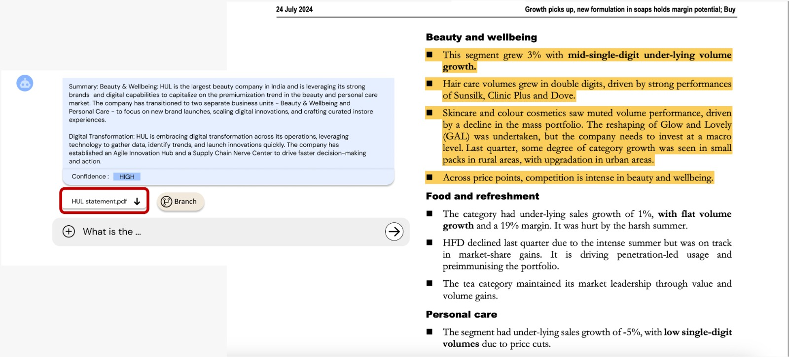
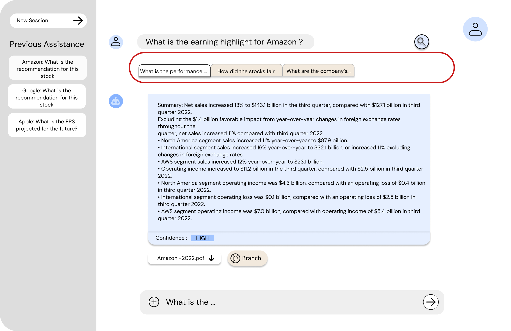
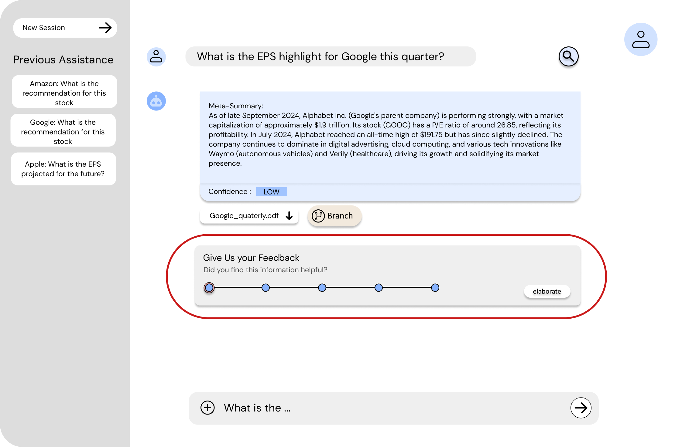
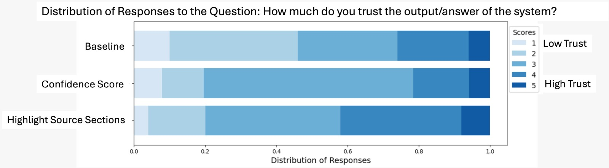
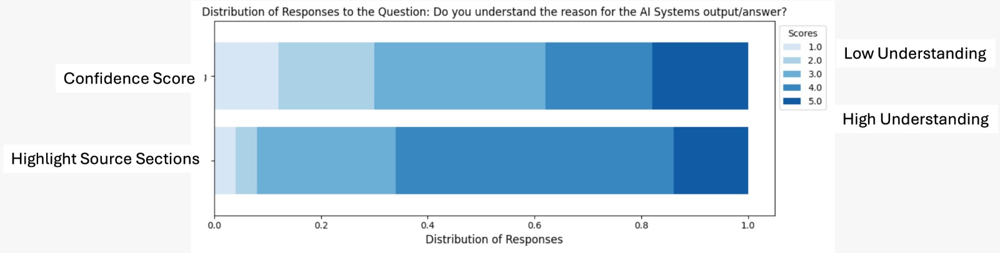

I designed and evaluated interface features for a RAG-based AI tool used by financial professionals by running a 50-person user study that produced statistically significant evidence about what actually builds trust in AI systems.
My Role
- UX Research (mixed methods : quantitative trust measurement + qualitative analysis)
- Interface Design (confidence tags, source highlighting, branching UI, feedback mechanisms)
- User Study Design + Testing (50 financial professionals)
Research Context
This study sits at the intersection of AI systems and human-computer interaction, specifically, how to make AI tools trustworthy for domain experts who have deep subject knowledge but limited technical familiarity with how AI works.
The Problem
How might we design RAG systems that build appropriate trust and transparency for domain experts in high-stakes decision-making?
Financial professionals are increasingly expected to use AI tools, but current RAG systems don’t give them enough visibility into how responses are generated to verify accuracy or meet regulatory standards.
Who is this for?
Financial professionals: domain experts who make high-stakes decisions, need to trace AI-generated insights back to source documents, and must satisfy regulatory compliance requirements, but have limited technical familiarity with AI.
Why this matters?
#1 TRUST CALIBRATION
Experts can’t afford to over-rely on AI, but blanket skepticism means they won’t use it at all. Transparency features are the bridge.
#2 TRANSPARENCY & VERIFICATION
Regulatory compliance requires being able to trace every AI-generated insight back to its source. Confidence scores alone don’t provide that.
#3 USER AGENCY & CONTROL
Experts need to choose which sources to trust, how to explore information, and how to adapt the tool to their workflow; not just consume outputs.
RESEARCH QUESTION
How do confidence levels, source attribution, and text highlighting impact user trust and understanding in RAG systems for financial analysis?
Development Process
RESEARCH METHODOLOGY
A controlled user study with 50 financial professionals combined quantitative trust measurement (Likert-scale surveys, Wilcoxon signed-rank tests) with qualitative thematic analysis of user preferences.
SYSTEM FEATURES EVALUATED

Source Attribution & Confidence Levels
- Each response includes confidence levels (LOW, MEDIUM, HIGH)
- Source-specific answers rather than synthesized responses
- Meta-summaries highlighting consensus and divergence across sources

Transparency Through Highlighted Text
- Specific document sections used for generation are highlighted
- Direct links to source PDFs with visual highlighting
- Enables traceability and intelligibility of system reasoning

User Control Through Branching
- Multiple inquiry streams management
- Source-specific questioning capabilities
- Parallel exploration of different reports or topics

Feedback Mechanisms
- Categorical and qualitative feedback options
- Human-machine collaboration support
- System improvement through user input
RESEARCH FINDINGS
KEY INSIGHTS FROM USER STUDY
Impact on Trust
p = 0.0036 (significant)- Confidence levels alone did not significantly increase trust (p = 0.080)
- Text highlighting + confidence levels significantly increased trust (p = 0.0036)
- Visual transparency more impactful than confidence indicators alone

Impact on Understanding
p = 0.0021 (significant)- Text highlighting significantly improved understanding (p = 0.0021)
- Users could better trace reasoning with highlighted source sections
- Visual transparency more effective than numerical confidence scores

User Control Preference
Four key themes from qualitative analysis:
Shortlist trusted reports; prefer specific brokerage sources; add custom documents.
Prefer specific analysts; balance personalization with avoiding bias.
High value in branching off specific reports for deeper, iterative questioning.
Transparency in how feedback is used; historical data evaluation.
DESIGN IMPLICATIONS
The clearest takeaway: showing your work matters more than claiming confidence. Text highlighting, showing which document sections the AI actually used, significantly outperformed numerical confidence scores for both trust (p = 0.0036) and comprehension (p = 0.0021). And 27 of 50 participants found branching the most valuable control feature: because in high-stakes decisions, verifying AI reasoning before acting is non-negotiable.
RESEARCH IMPACT
The study produced empirical design guidelines for RAG systems used by domain experts: with direct applicability to legal, healthcare, and consulting contexts where AI-assisted decisions carry real accountability.
TECHNICAL APPROACH
System Architecture:
RAG with vector database storage; confidence scoring on relevance and factuality; document highlighting via semantic similarity; multi-source response generation with full source attribution.
Evaluation Methodology:
Pre/post Likert-scale trust surveys; controlled task-based study; Wilcoxon signed-rank statistical analysis; qualitative thematic analysis.
REFLECTION
The central insight: users need agency, not just accurate responses. Technical improvements in RAG systems matter, but if experts can’t see the reasoning, they won’t act on the output.
Transparency has to be actionable. Showing a confidence score doesn’t help. Highlighting the exact document passage that informed the answer does. This study gave me rigorous, quantitative evidence to back that design principle.
Publication Details
Full Citation: Divya Ravi and Renuka Sindhgatta. 2025. Exploring Trust and Transparency in Retrieval-Augmented Generation for Domain Experts. In Extended Abstracts of the CHI Conference on Human Factors in Computing Systems (CHI EA '25), April 26–May 01, 2025, Yokohama, Japan. ACM, New York, NY, USA, 7 pages.
DOI: https://doi.org/10.1145/3706599.3719985
Conference: CHI EA '25 - Extended Abstracts of the CHI Conference on Human Factors in Computing Systems